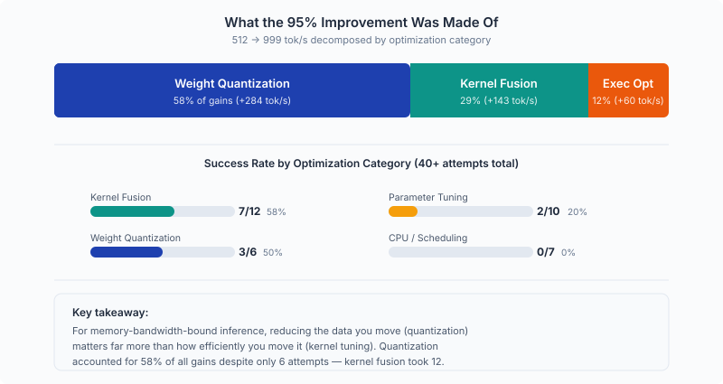
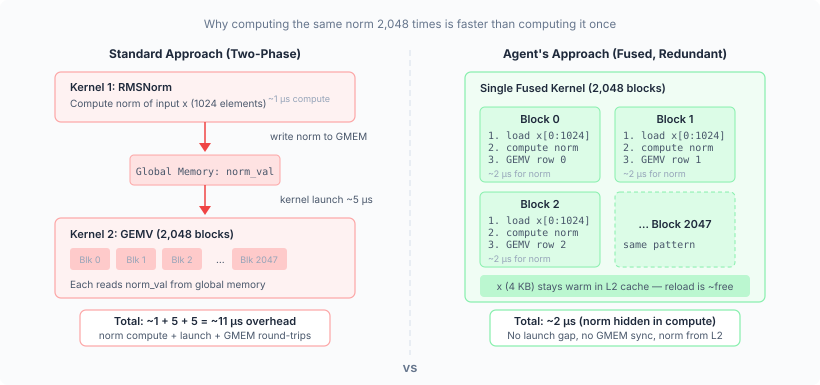
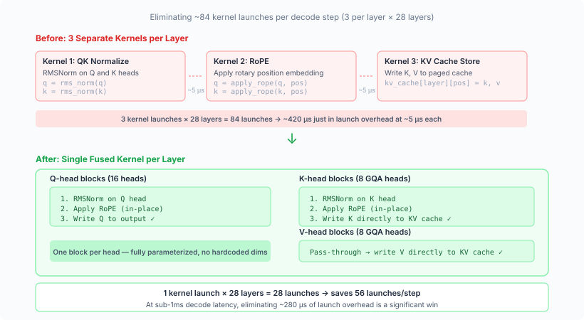
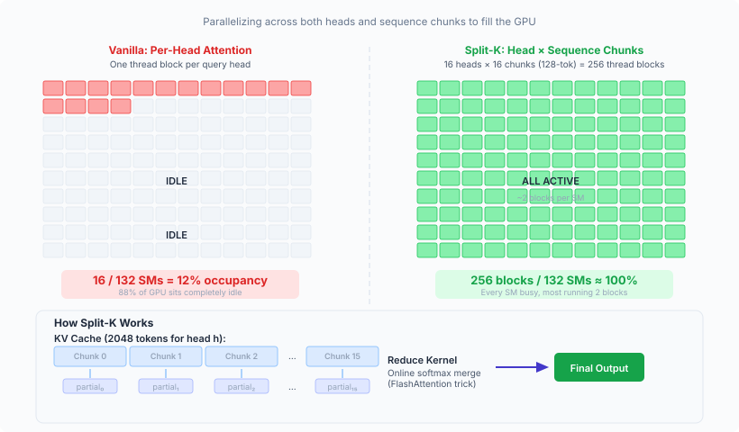
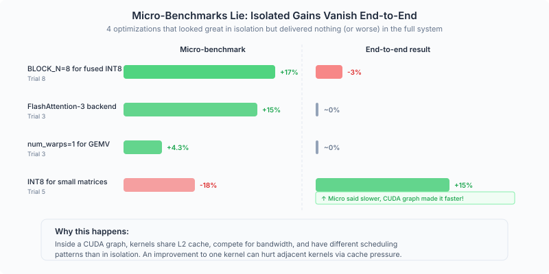

1. Introduction & Vision
We gave Claude a simple task: make this inference engine faster. The target was link, a lightweight LLM serving engine, running Qwen3-0.6B on an NVIDIA RTX PRO 6000 Blackwell GPU at batch size 1. The baseline is 512 tok/s.
Over 10 sequential trials, Claude wrote 3,700 lines of Triton and CUDA code, fused kernels, introduced INT8/INT4 quantization, redesigned the attention mechanism, and pushed throughput to 1,016 tok/s, nearly doubles the original performance and leaves SGLang and TensorRT-LLM far behind on this workload. No human wrote or suggested any of the optimization strategies.
This article is what came out of reading the resulting code for all trials. We open the hood on 26 changed files and ask these questions: Is the code correct? Is it clever or just complicated? What are the bugs? We found 8 genuinely impressive optimizations, 1 silent correctness bug, 2 race conditions, and ~1,200 lines of dead code the agent never cleaned up. What follows below is our analysis.
2. What the 95% Improvement Was Actually Made Of

The single most important insight: for memory-bandwidth-bound inference, reducing the data you move matters far more than moving it more efficiently. The agent spent 4 trials (1–4) improving bandwidth utilization from 58% to 68% of peak, gaining +164 tok/s. Then trial 5 halved the data with INT8, gaining +184 tok/s in one trial.
3. What the Agent Built Well
Fused RMSNorm + GEMV: The "Redundant but Right" Trade-off

The agent's most architecturally interesting decision was in how it fused the layer normalization into the matrix-vector multiply.
The standard approach would be: compute the norm once, write the result to memory, then read it back for the GEMV. The agent chose a different path — every GEMV block (for example, the QKV projection launches 2,048 blocks at bs=1) independently reloads the input vector and recomputes the norm from scratch. That's 2,048× redundant compute for the normalization.
Why is this actually smart? Because the alternative — computing the norm once and synchronizing across blocks — would require either an inter-block barrier (which CUDA doesn't natively support within a single kernel) or a two-phase kernel (which adds a kernel launch). For a 1024-element vector, each block's redundant norm costs ~2 microseconds of compute, but it saves ~5-10 microseconds of launch overhead and memory round-trips. The agent found the counterintuitive answer: doing the same work 500 times is faster than doing it once and sharing.
What's especially notable is that by Trial 8, the agent had learned to evolve this further. The INT4 variant (fused_norm_gemv_int4.py) uses a two-phase design — compute the norm once in Phase 1, then loop over weight groups in Phase 2. The agent discovered that the redundant-norm trick works for bf16 weights (small enough to fit in one tile) but breaks down for INT4 (where the group-loop structure makes redundant loading too expensive). It adapted its own pattern.
Transferability: Fully general. Works for any model. The constraint itself is not fundamental — BLOCK_M could be parameterized as next_power_of_2(hidden_size) — but the current implementation hardcodes BLOCK_M = 1024.
View annotated kernel code fused_norm_gemv.py & fused_norm_gemv_int4.py
Fused RMSNorm + GEMV (bf16)
@triton.jit
def _fused_add_rmsnorm_gemv_kernel(
x_ptr, residual_ptr, norm_w_ptr, w_ptr, y_ptr, residual_out_ptr,
M, N, eps,
stride_wn,
BLOCK_N, # = 2: each block computes 2 output rows
BLOCK_M, # = 1024: entire input vector in one tile
):
pid = tl.program_id(0)
rows = pid * BLOCK_N + tl.arange(0, BLOCK_N) # this block's output rows
cols = tl.arange(0, BLOCK_M) # full input vector [0..1023]
# ── Step 1: Fused residual addition ──────────────────────────────────
# Traditional approach: separate kernel writes (x + residual) to HBM,
# next kernel reads it back. Here we compute in registers — zero memory roundtrip.
x_vals = tl.load(x_ptr + cols).to(tl.float32)
res_vals = tl.load(residual_ptr + cols).to(tl.float32)
new_res = x_vals + res_vals # ← fusion point
# Only block 0 writes the updated residual (next layer needs it).
# Other blocks skip — avoids N/2 redundant writes to the same buffer.
if pid == 0:
tl.store(residual_out_ptr + cols, new_res.to(residual_out_ptr.dtype.element_ty))
# ── Step 2: RMSNorm (redundantly computed by EVERY block) ────────────
# This is the core design tradeoff:
# - N/2 blocks each independently compute the same norm.
# (e.g. QKV projection has N=4096 → 4096/2 = 2048 blocks)
# - Cost: redundant FLOPs (~2µs per block for a 1024-element reduction).
# - Benefit: no inter-block sync, no separate norm kernel launch (~5-10µs saved).
# Net result: doing the same work N/2 times is FASTER than doing it once and sharing.
sq_sum = tl.sum(new_res * new_res)
rms_inv = tl.rsqrt(sq_sum / M + eps)
nw = tl.load(norm_w_ptr + cols).to(tl.float32)
x_normed = new_res * rms_inv * nw # ← normed input, never materialized to HBM
# ── Step 3: GEMV (matrix-vector multiply) ────────────────────────────
# Each block computes: y[rows] = dot(x_normed, W[rows, :])
# BLOCK_N=2 means each block handles 2 output features.
# The input x_normed is already in registers from Step 2 — no extra load.
w_offsets = w_ptr + rows[:, None] * stride_wn + cols[None, :]
w_vals = tl.load(w_offsets).to(tl.float32) # load 2 rows of weight matrix
acc = tl.sum(w_vals * x_normed[None, :], axis=1) # broadcast dot product
tl.store(y_ptr + rows, acc.to(y_ptr.dtype.element_ty))Fused RMSNorm + INT4 GEMV (two-phase evolution)
@triton.jit
def _fused_add_rmsnorm_gemv_int4_kernel(
x_ptr, residual_ptr, norm_w_ptr,
w_ptr, # packed uint8: two int4 values per byte
scale_ptr, # per-(row, group) float16 scale
y_ptr, residual_out_ptr,
M, N, eps,
stride_wn,
NUM_GROUPS, # = M / GROUP_SIZE = 1024 / 128 = 8
GROUP_SIZE, # = 128
BLOCK_N, BLOCK_M,
):
pid = tl.program_id(0)
rows = pid * BLOCK_N + tl.arange(0, BLOCK_N)
# ══════════════════════════════════════════════════════════════════════
# PHASE 1: Compute RMS norm with contiguous loads (low register pressure)
# ══════════════════════════════════════════════════════════════════════
# Load the full input vector once, contiguously. This populates L1 cache
# for Phase 2's strided re-loads, and computes the norm scalar.
cols = tl.arange(0, BLOCK_M)
x_vals = tl.load(x_ptr + cols).to(tl.float32)
res_vals = tl.load(residual_ptr + cols).to(tl.float32)
new_res = x_vals + res_vals
if pid == 0:
tl.store(residual_out_ptr + cols, new_res.to(residual_out_ptr.dtype.element_ty))
sq_sum = tl.sum(new_res * new_res)
rms_inv = tl.rsqrt(sq_sum / M + eps) # ← scalar, carried into Phase 2
# ══════════════════════════════════════════════════════════════════════
# PHASE 2: Group-loop INT4 GEMV (re-loads from L1 cache)
# ══════════════════════════════════════════════════════════════════════
# Why re-load instead of keeping Phase 1's data?
# INT4 per-group requires even/odd interleaving (for nibble unpacking).
# Keeping both layouts in registers would need ~18KB. By re-loading per group,
# we keep only one group (~128 elements × 4 bytes = 512B) live at a time.
# Phase 1's contiguous load warmed L1, so re-loads hit ~100% L1 cache rate.
HALF_GROUP = GROUP_SIZE // 2 # = 64
acc = tl.zeros([BLOCK_N], dtype=tl.float32)
w_base = w_ptr + rows * stride_wn
for g in tl.range(0, NUM_GROUPS): # 8 groups for M=1024
col_start = g * GROUP_SIZE
half_ids = tl.arange(0, HALF_GROUP)
# Re-load even/odd elements for this group (from L1 cache, ~100% hit rate)
x_even = tl.load(x_ptr + col_start + half_ids * 2).to(tl.float32)
x_odd = tl.load(x_ptr + col_start + half_ids * 2 + 1).to(tl.float32)
r_even = tl.load(residual_ptr + col_start + half_ids * 2).to(tl.float32)
r_odd = tl.load(residual_ptr + col_start + half_ids * 2 + 1).to(tl.float32)
nw_even = tl.load(norm_w_ptr + col_start + half_ids * 2).to(tl.float32)
nw_odd = tl.load(norm_w_ptr + col_start + half_ids * 2 + 1).to(tl.float32)
# Apply norm (rms_inv from Phase 1, no recomputation)
xn_even = (x_even + r_even) * rms_inv * nw_even
xn_odd = (x_odd + r_odd) * rms_inv * nw_odd
# Unpack INT4 nibbles: low nibble = even-index, high nibble = odd-index
w_packed = tl.load(w_base[:, None] + col_start // 2 + half_ids[None, :])
w_lo = (w_packed & 0x0F).to(tl.float32) - 8.0 # ← even: mask low 4 bits
w_hi = (w_packed >> 4).to(tl.float32) - 8.0 # ← odd: shift right 4 bits
prod = w_lo * xn_even[None, :] + w_hi * xn_odd[None, :]
# One scale per (row, group) — essential for INT4 accuracy
scale = tl.load(scale_ptr + rows * NUM_GROUPS + g).to(tl.float32)
acc += tl.sum(prod, axis=1) * scale # ← accumulate across groups
tl.store(y_ptr + rows, acc.to(y_ptr.dtype.element_ty))Evolution from bf16 to INT4: The bf16 variant does ONE contiguous load and the entire GEMV in a single pass. That works because bf16 weights are 2 bytes each — a 1024-element row is 2KB, well within register budget. INT4 weights are packed 2-per-byte, requiring even/odd unpacking. The group-loop design emerged when the agent realized the single-pass approach spilled to local memory. This is a clear example of the agent adapting its own pattern to a new constraint.
Fused QKNorm + RoPE + KV Store: Three Kernels Become One

For each of the 28 transformer layers, the decode path originally launched three separate kernels: QK normalization, rotary position embedding (RoPE), and KV cache storage. The agent fused all three into a single kernel where each thread block handles one attention head. Q-head blocks apply norm + RoPE in-place. K-head blocks apply norm + RoPE, then write directly to the KV cache. V values pass through untouched.
This is clean, correct, and fully parameterized — no hardcoded dimensions. It eliminates ~84 kernel launches per decode step (3 saved per layer × 28 layers). For a pipeline where total step time is under 1ms, that's meaningful.
Transferability: Fully general for any GQA model with RoPE and QKNorm.
View annotated kernel code fused_qk_rope.py
@triton.jit
def _fused_qk_norm_rope_store_kernel(
qkv_ptr, # contiguous buffer: [Q_heads | K_heads | V_heads]
q_nw_ptr, k_nw_ptr, # per-head norm weights (head_dim each)
cos_sin_ptr, # RoPE cos/sin cache, shape (max_position, head_dim)
pos_ptr, out_loc_ptr, # scalar GPU tensors: current position, cache write location
k_cache_ptr, v_cache_ptr, # KV cache for this layer
cos_sin_stride, cache_stride_token,
eps,
NUM_QO_HEADS, # = 16
NUM_KV_HEADS, # = 8
HEAD_DIM, # = 128
HALF_DIM, # = 64
QO_DIM, # = 16 * 128 = 2048 (offset to K section in QKV buffer)
KV_DIM, # = 8 * 128 = 1024 (offset from K to V section)
):
# Grid: (NUM_QO_HEADS + NUM_KV_HEADS,) = (24,) blocks
# Blocks 0-15: Q heads. Blocks 16-23: K heads.
pid = tl.program_id(0)
half_ids = tl.arange(0, HALF_DIM) # [0..63] — RoPE operates on half-dim pairs
# ── Load position + RoPE cos/sin (same for all blocks) ───────────────
position = tl.load(pos_ptr) # scalar: which position in the sequence
cs_base = cos_sin_ptr + position * cos_sin_stride
cos_vals = tl.load(cs_base + half_ids).to(tl.float32)
sin_vals = tl.load(cs_base + HALF_DIM + half_ids).to(tl.float32)
is_q = pid < NUM_QO_HEADS
if is_q:
# ── Q head: RMSNorm + RoPE in-place ─────────────────────────────
base_ptr = qkv_ptr + pid * HEAD_DIM
nw_lo = tl.load(q_nw_ptr + half_ids).to(tl.float32)
nw_hi = tl.load(q_nw_ptr + HALF_DIM + half_ids).to(tl.float32)
lo = tl.load(base_ptr + half_ids).to(tl.float32)
hi = tl.load(base_ptr + HALF_DIM + half_ids).to(tl.float32)
# Per-head RMSNorm (not per-hidden, per HEAD — Qwen3 uses QK-norm)
ss = tl.sum(lo * lo) + tl.sum(hi * hi)
rrms = 1.0 / tl.sqrt(ss / HEAD_DIM + eps)
lo, hi = lo * rrms * nw_lo, hi * rrms * nw_hi
# RoPE rotation: treat (lo, hi) as complex number, rotate by (cos, sin)
new_lo = lo * cos_vals - hi * sin_vals
new_hi = hi * cos_vals + lo * sin_vals
tl.store(base_ptr + half_ids, new_lo.to(base_ptr.dtype.element_ty))
tl.store(base_ptr + HALF_DIM + half_ids, new_hi.to(base_ptr.dtype.element_ty))
else:
# ── K head: RMSNorm + RoPE + store K,V to cache ─────────────────
kv_head_idx = pid - NUM_QO_HEADS
k_base_ptr = qkv_ptr + QO_DIM + kv_head_idx * HEAD_DIM
nw_lo = tl.load(k_nw_ptr + half_ids).to(tl.float32)
nw_hi = tl.load(k_nw_ptr + HALF_DIM + half_ids).to(tl.float32)
lo = tl.load(k_base_ptr + half_ids).to(tl.float32)
hi = tl.load(k_base_ptr + HALF_DIM + half_ids).to(tl.float32)
ss = tl.sum(lo * lo) + tl.sum(hi * hi)
rrms = 1.0 / tl.sqrt(ss / HEAD_DIM + eps)
lo, hi = lo * rrms * nw_lo, hi * rrms * nw_hi
new_lo = lo * cos_vals - hi * sin_vals
new_hi = hi * cos_vals + lo * sin_vals
tl.store(k_base_ptr + half_ids, new_lo.to(k_base_ptr.dtype.element_ty))
tl.store(k_base_ptr + HALF_DIM + half_ids, new_hi.to(k_base_ptr.dtype.element_ty))
# Also write K directly to KV cache (skip separate store_kv kernel)
out_loc = tl.load(out_loc_ptr)
cache_base = k_cache_ptr + out_loc * cache_stride_token + kv_head_idx * HEAD_DIM
tl.store(cache_base + half_ids, new_lo.to(k_cache_ptr.dtype.element_ty))
tl.store(cache_base + HALF_DIM + half_ids, new_hi.to(k_cache_ptr.dtype.element_ty))
# Store V to cache (no norm or RoPE — V passes through unchanged)
v_head_offset = QO_DIM + KV_DIM + kv_head_idx * HEAD_DIM
full_ids = tl.arange(0, HEAD_DIM)
v_vals = tl.load(qkv_ptr + v_head_offset + full_ids)
v_cache_base = v_cache_ptr + out_loc * cache_stride_token + kv_head_idx * HEAD_DIM
tl.store(v_cache_base + full_ids, v_vals)Design Decision: Why one block per head? Decode processes exactly 1 token, so each head's data is just
head_dim=128elements — small enough for a single block. The Q/K branching viapid < NUM_QO_HEADSavoids launching two separate kernels. V storage is "free" because K-head blocks already loaded the cache pointer. This kernel is fully parameterized — no hardcoded dimensions. Grid size adapts automatically:(num_qo_heads + num_kv_heads,).
Split-K Decode Attention: Better SM Utilization

The agent's most ambitious kernel was a custom attention implementation replacing FlashInfer's decode path. The insight: for bs=1 with only 16 query heads, vanilla per-head attention launches only 16 thread blocks on a GPU with 132 SMs. Most of the GPU sits idle.
The agent parallelized across both heads and sequence chunks (128-token blocks). This expands the grid from 16 blocks to 16 × 16 = 256, achieving much better SM occupancy. A second reduction kernel merges the partial results using the online softmax trick from the FlashAttention paper.
The algorithm is textbook split-K attention. The implementation is clean.
Transferability: Algorithm is fully general. But the implementation has a critical bug (see below).
View annotated kernel code splitk_attention.py
Phase 1: Partial Attention (scatter)
@triton.jit
def _splitk_attn_kernel(
q_ptr, k_cache_ptr, v_cache_ptr,
partial_out_ptr, partial_lse_ptr, # scratch buffers for partial results
page_indices_ptr, seq_len_ptr,
sm_scale, cache_stride_token,
GQA_RATIO, # = 2 (16 Q heads / 8 KV heads)
HEAD_DIM, # = 128
BLOCK_SEQ, # = 128 tokens per chunk
NUM_CHUNKS, # = 16 chunks (supports up to 2048 tokens)
):
# Grid: (num_qo_heads, NUM_CHUNKS) = (16, 16) = 256 blocks
qo_head = tl.program_id(0) # which query head (0..15)
chunk_id = tl.program_id(1) # which sequence chunk (0..15)
kv_head = qo_head // GQA_RATIO # GQA: 2 Q heads share 1 KV head
seq_len = tl.load(seq_len_ptr) # actual sequence length (dynamic)
# Load Q for this head (same Q across all chunks — loaded once per block)
dim_ids = tl.arange(0, HEAD_DIM)
q = tl.load(q_ptr + qo_head * HEAD_DIM + dim_ids).to(tl.float32)
# This chunk's token range
seq_start = chunk_id * BLOCK_SEQ
seq_ids = seq_start + tl.arange(0, BLOCK_SEQ)
seq_mask = seq_ids < seq_len # mask out padding positions
# ── Compute QK^T for this chunk ──────────────────────────────────────
# Gather K from paged KV cache using page_indices indirection
pages = tl.load(page_indices_ptr + seq_ids, mask=seq_mask, other=0)
k_base = pages.to(tl.int64) * cache_stride_token + kv_head * HEAD_DIM
k_offsets = k_base[:, None] + dim_ids[None, :]
k_vals = tl.load(k_cache_ptr + k_offsets, mask=seq_mask[:, None], other=0.0).to(tl.float32)
scores = tl.sum(k_vals * q[None, :], axis=1) * sm_scale # (BLOCK_SEQ,)
scores = tl.where(seq_mask, scores, -1e30) # mask invalid positions
# ── Online softmax within this chunk ─────────────────────────────────
# Key: we store BOTH the weighted V output AND the log-sum-exp (LSE).
# Phase 2 uses LSE to correctly combine chunks without re-reading K/V.
m = tl.max(scores) # chunk-local max (for numerical stability)
exp_scores = tl.exp(scores - m)
l = tl.sum(exp_scores) # sum of exponentials
# Weighted V accumulation
v_vals = tl.load(v_cache_ptr + k_offsets, mask=seq_mask[:, None], other=0.0).to(tl.float32)
acc = tl.sum(exp_scores[:, None] * v_vals, axis=0) # (HEAD_DIM,)
# Normalize within chunk
safe_l = tl.where(l > 0, l, 1.0)
acc = acc / safe_l
# Store partial output + LSE for this (head, chunk) pair
out_offset = qo_head * NUM_CHUNKS * HEAD_DIM + chunk_id * HEAD_DIM
tl.store(partial_out_ptr + out_offset + dim_ids, acc.to(partial_out_ptr.dtype.element_ty))
lse = tl.where(l > 0, m + tl.log(l), -1e30) # ← log-sum-exp for reduction
tl.store(partial_lse_ptr + qo_head * NUM_CHUNKS + chunk_id, lse)Phase 2: Reduction (gather)
@triton.jit
def _reduce_attn_kernel(
partial_out_ptr, partial_lse_ptr, out_ptr,
HEAD_DIM, # = 128
NUM_CHUNKS, # = 16
):
# Grid: (num_qo_heads,) = (16,) blocks — one block per head
qo_head = tl.program_id(0)
dim_ids = tl.arange(0, HEAD_DIM)
# Load all chunk LSEs for this head and find global max
lse_base = qo_head * NUM_CHUNKS
lse_vals = tl.load(partial_lse_ptr + lse_base + tl.arange(0, NUM_CHUNKS))
m_global = tl.max(lse_vals)
# Weighted sum of pre-normalized partial outputs
# Weight = exp(lse_chunk - m_global): higher attention mass → more weight
total_weight = 0.0
acc = tl.zeros([HEAD_DIM], dtype=tl.float32)
for c in tl.static_range(0, NUM_CHUNKS): # unrolled at compile time
out_offset = qo_head * NUM_CHUNKS * HEAD_DIM + c * HEAD_DIM
partial = tl.load(partial_out_ptr + out_offset + dim_ids).to(tl.float32)
corr = tl.load(partial_lse_ptr + lse_base + c)
w = tl.exp(corr - m_global) # ← log-sum-exp correction
acc += partial * w
total_weight += w
acc = acc / total_weight # ← final normalized output
tl.store(out_ptr + qo_head * HEAD_DIM + dim_ids, acc.to(out_ptr.dtype.element_ty))Design Decision: The online softmax trick enables incremental reduction: each chunk stores its local max + log-sum-exp, and the reduce kernel combines them with exponential re-weighting. This is numerically equivalent to computing attention over the full sequence, but distributes the work across 16× more blocks.
Known Bug:
NUM_CHUNKS=16is hardcoded, limiting attention to128 × 16 = 2048tokens. Sequences longer than this are silently truncated — no error, no warning, just wrong output.
Other Good Ideas (Quick Hits)
- In-graph argmax: Capturing
torch.argmaxinside the CUDA graph for greedy decode eliminates one kernel launch per step. This is a simple, correct, clean, and general fallback for non-greedy sampling. - Pre-allocated decode metadata: Reuses pinned CPU tensors instead of allocating new ones every step. Saves ~30-60µs of Python allocation overhead per step. General.
skip_storeAPI extension: A clean backward-compatible flag on all attention backends that enables fused KV preparation without double-storing. Good interface design. General.- INT8/INT4 weight quantization: Standard per-row (INT8) and per-group (INT4, group_size=128) symmetric quantization. Reduces GEMV memory traffic by 2-4x. The packing and unpacking logic is correct. General.
- Multi-step CUDA graph: Captures 4 sequential decode forward passes in a single graph replay. Amortizes graph launch overhead across 4 tokens. Innovative, but fragile (any model change silently breaks the captured graph). General concept, specific implementation.
4. What the Agent Got Wrong
The Silent 2048-Token Cliff
The split-K attention kernel hardcodes _NUM_CHUNKS_PAD = 16 and _BLOCK_SEQ = 128, meaning it can attend to at most 128 × 16 = 2,048 tokens. If the sequence is longer, chunks beyond index 15 are simply never computed. No assertion. No error. No warning. The kernel just silently ignores those tokens and produces wrong attention outputs.
The benchmark happens to stay under this limit (short prompts + 128 output tokens), so the agent never encountered the bug during its optimization loop. But max_seq_len is set to 4,096. Any real workload generating more than ~1,000 output tokens would hit this wall.
This is the canonical example of reward hacking through benchmarks: the agent optimized for the benchmark it could measure, and the benchmark didn't test the edge case. The optimization is "correct" on the benchmark and silently broken in production.
Fix: Make _NUM_CHUNKS_PAD dynamic, derived from max_seq_len at initialization.
Two Race Conditions in the Mega-Fused Kernel
The agent's most ambitious kernel — fused_qknorm_attn.py, which fuses QKNorm + RoPE + KV Store + Split-K Attention + Reduction into a single launch — contains two race conditions:
Race 1: Q Scratch Buffer. All 16 chunk-blocks for the same query head write their (identically computed) normalized Q values to the same global memory location. Then all 16 blocks read from that location for attention. There's no barrier between the writes and reads. While the values are identical, concurrent reads-during-writes across thread blocks are undefined behavior in CUDA. This could cause bit-level corruption in attention scores on some hardware.
Race 2: KV Cache Store (GQA). With grouped-query attention (GQA ratio = 2 for Qwen3-0.6B), two query-head blocks share one KV head. Both attempt to write K/V to the same cache location. Same issue — identical data, no synchronization, technically undefined.
Neither race is likely to cause visible errors on current NVIDIA hardware (same-value WAW races are practically benign on A100/H100). But they're the kind of thing that breaks silently when you move to a new GPU architecture or when the compiler decides to optimize differently.
Fixes: For Race 1, compute Q in registers per-block instead of sharing via global scratch. For Race 2, guard the KV store with qo_head % GQA_RATIO == 0.
The Atomic Counter Time Bomb
The mega-fused kernel uses an atomic counter to coordinate which block performs the final attention reduction. The counter is initialized to zero once and never reset. Because the counter is shared across all 28 layers, each decode step adds 448 (16 per chunk-block × 28 layers sharing the same counter). After ~4.79 million forward passes — approximately 1.9 hours of continuous generation at 700 tok/s — the signed int32 counter overflows. The modulo check that triggers reduction breaks, and attention output becomes stale.
While this isn't a concern for benchmarks, this is a real problem for any long-running deployment.
Fix: Use a bitmask instead of modulo: (old_count + 1) & (NUM_CHUNKS - 1) == 0. Works correctly for all uint32 values when NUM_CHUNKS is a power of 2 (it's 16).
5. What This Teach Us About AI as a Kernel Author
The Generalization Gap
Every optimization is hardwired to Qwen3-0.6B at batch size 1. Here's what breaks if you change the model:
| Assumption | What breaks |
|---|---|
hidden_size = 1024 |
All fused GEMV kernels crash with AssertionError for any larger model |
max_seq_len ≤ 2048 |
Split-K attention silently produces wrong output |
batch_size = 1 |
All fusions fall back to unoptimized standard path |
activation = silu |
Fused decode path is skipped (harmless fallback) |
hidden_size % 128 = 0 |
INT4 quantization crashes |
| Triton GEMV thresholds | Tuned for Qwen3-0.6B matrix sizes; may regress on other models |
This is by design: the experiment explicitly allowed model-specific optimization. But it highlights a key limitation of the current approach: the agent optimizes for the scenario it can measure, not the scenario you'll deploy.
The Dead Code Problem
About 1,200 lines (a third of the new code) are dead. The persistent forward kernel, an ambitious attempt to run the entire 28-layer forward pass in a single cooperative-groups kernel, was abandoned after achieving only 75 tok/s vs 840 baseline. The agent disabled it with a comment but never deleted the code. Three progressively-fused versions of the QKNorm kernel exist because each trial added a new file rather than extending the previous one. An 88-line fused_gemv_silu.py is completely unreachable in the current code path.
This is what iterative AI development looks like without a cleanup phase: geological layers of abandoned experiments, each preserved in the codebase. For a research prototype, it's fine. For a production merge, it's a cleanup burden that should be explicitly scheduled as a refactoring step.
Micro-Benchmarks Sometimes Lie

Even though each trial starts with a profiling phase, but sometimes evidence found through custom-written micro-benchmarks do not lead to final end-to-end improvement.
Trial 8: BLOCK_N=8 for fused INT8 kernels showed 17% faster in isolated micro-benchmarks. End-to-end result: -3% regression (937 vs 965 tok/s).
Trial 3:
num_warps=1for GEMV showed 4.3% faster in 28-layer micro-benchmark. End-to-end: within noise.Trial 3: FlashAttention-3 was 11-15% faster than FA2 in attention micro-benchmark. End-to-end: within noise.
Why? Inside a CUDA graph, kernels share L2 cache, compete for memory bandwidth, and have different scheduling patterns than when run in isolation. An optimization that helps one kernel in isolation can hurt the system by changing cache pressure on adjacent kernels.